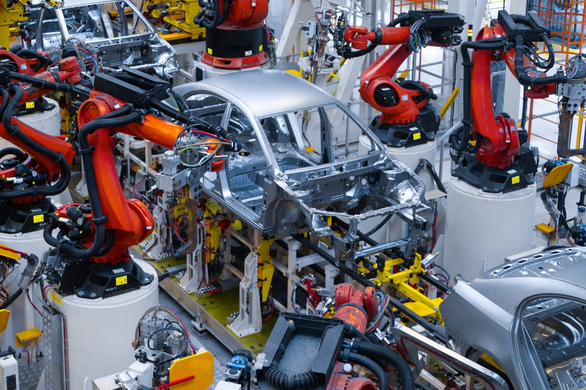
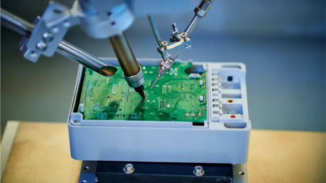
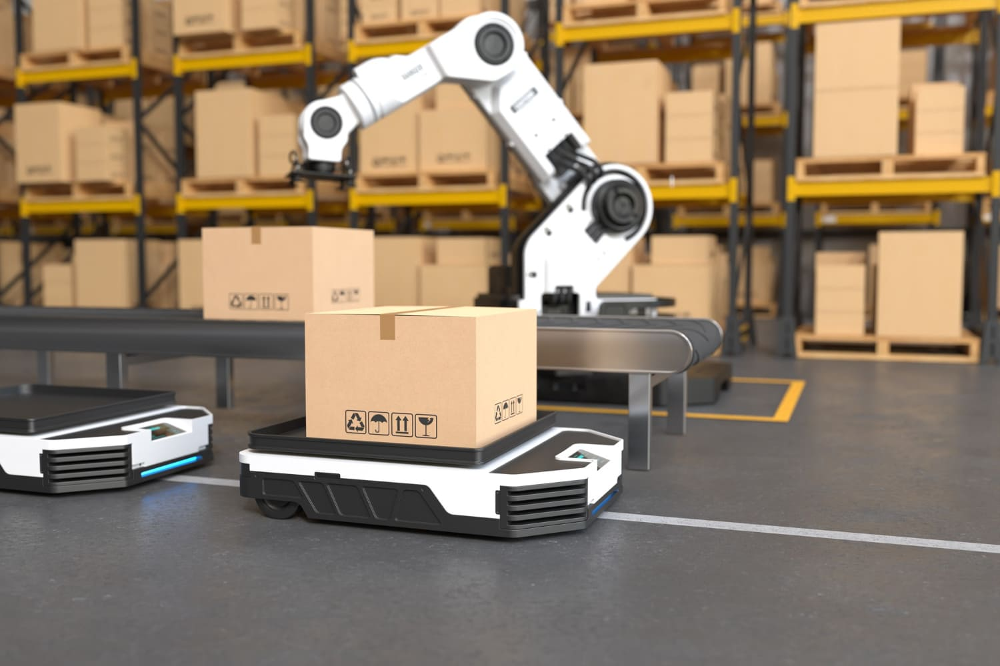

Industria de la automoción

Se utilizan principalmente para tareas de soldadura, pintura, ensamblaje y manipulación de piezas pesadas. Tienen precisión milimétrica y seguridad para los operarios

Se utilizan principalmente para tareas de soldadura, pintura, ensamblaje y manipulación de piezas pesadas. Tienen precisión milimétrica y seguridad para los operarios

Se usan en la fabricación de móviles, ordenadores y placas base, para la inserción de microchips o componentes

En el comercio electrónico, los robots con guiado automatico se encargan de organizar el inventario, preparar pedidos y transportar mercancía de forma autónoma por los almacenes